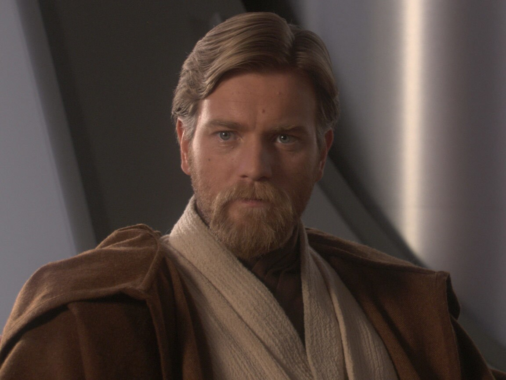
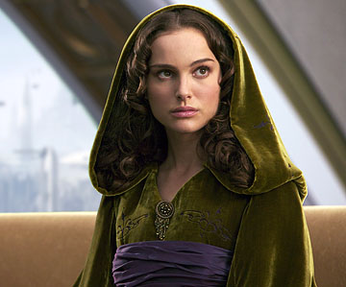

Personagens principais da saga



Planetas
Tatooine
Planeta com dois sóis, lar de Luke Skywalker, Anakin e ponto central de muitas histórias.
Coruscant
Planeta inteiramente coberto por uma cidade. Sede do Senado Galáctico e do Templo Jedi.
Hoth
Planeta de gelo onde a Aliança Rebelde estabeleceu sua base secreta, atacada pelo Império.
Endor
Lua com florestas densas onde ocorreu a batalha final contra a segunda Estrela da Morte.
Naboo
Planeta de paisagens exuberantes, lar da Rainha Amidala e de Jar Jar Binks.
Mustafar
Planeta de lava onde Obi-Wan derrotou Anakin, marcando sua transformação em Darth Vader.
Dragobah
Planeta pantanoso e isolado onde Yoda se escondeu do Império e treinou Luke Skywalker.
Alderaan
Planeta pacifista e lar de Leia, destruído pela Estrela da Morte como demonstração de poder.